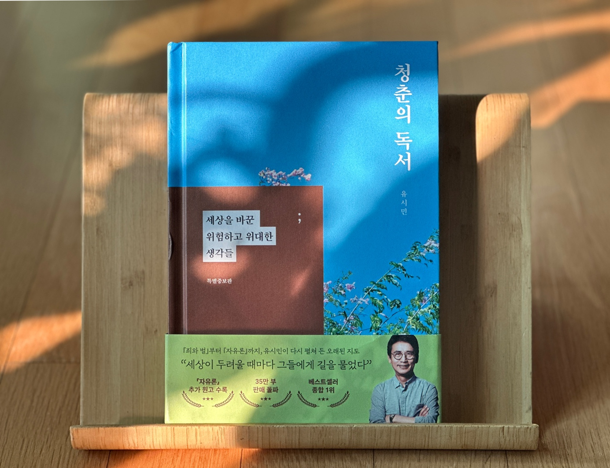

안녕하세요 라보엠입니다.
유시민 작가의 청춘의 독서는 ‘청춘에게 권하는 인생 독서법’이라는 부제가 잘 어울리는 책입니다. 이 책은 저자가 청년 시절 읽었던 15권의 고전과 명저를 통해, 어떻게 자신의 세계관과 인생관을 형성해왔는지를 솔직하게 고백하는 독서 에세이입니다. 청춘에게 도움이 될 책들을 추천하면서, 한 인간이 어떻게 책을 통해 성장하고 변화하는지, 그리고 고전이 왜 청춘의 나침반이 될 수 있는지를 깊이 있게 보여주는 책입니다.

청춘의 고민과 고전의 만남
청춘의 독서는 니체, 조지 오웰, 사르트르, 도스토옙스키 등 세계적 지성들의 책을 중심으로, 유시민 작가가 젊은 시절 품었던 질문들과 그 답을 찾아가는 여정을 담고 있습니다. “세상은 진보하고 있을까?”, “민주주의란 무엇인가?”, “인간은 원래 이기적인가?”, “사실과 진실은 어떻게 왜곡되는가?”, “앞으로 어떻게 살아야 할까?”와 같은 근본적인 질문들이 책 전반을 관통합니다.
저자는 이 책에서 자신이 고전을 읽으며 얻은 감정과 생각, 그리고 삶과 인간, 사회와 역사에 대한 사유를 솔직하게 풀어냅니다. 그는 “책을 읽으면서 얻은, 삶과 인간과 세상과 역사에 대한, 나 자신의 감정과 생각을 말하려고 썼다”고 밝히고 있습니다. 그래서 이 책은 저자의 인생 이야기이자, 방황하는 청춘에게 전하는 진심 어린 조언이기도 합니다.
책의 구성과 특징
책은 각 장마다 한 권의 고전을 다루며, 그 책이 저자에게 어떤 영향을 미쳤는지, 그리고 그 책을 통해 스스로 어떤 질문을 던지고 답을 찾았는지 서술합니다. 예를 들어, 도스토옙스키의 죄와 벌, 존 스튜어트 밀의 자유론, 카타리나 블룸의 잃어버린 명예 등 다양한 분야의 책이 등장합니다. 유시민 작가는 각 책의 핵심 내용을 쉽고 명확하게 소개하면서, 자신의 경험과 시대적 고민을 함께 녹여냅니다.특히, 2025년 특별증보판에서는 기존 14권에 존 스튜어트 밀의 자유론을 추가하고, 전체적으로 문장을 다듬어 더욱 깊이 있는 내용을 담았습니다. 책 말미에는 “고전에 대한 균형 잡힌 서평이 아니므로, 저자의 시각에 따라 편견을 갖지 말아달라”는 당부도 남깁니다. 독자에게도 ‘마음대로 읽기’의 권리를 강조하며, 책을 읽는 과정 자체의 즐거움을 일깨워줍니다.
청춘에게 전하는 메시지
청춘의 독서는 방황하는 청춘에게 사고의 나침반이 되어주고, 고전을 통해 스스로를 돌아보는 계기를 제공합니다. 유시민 작가는 “책은 나에게 길을 알려줬고, 나를 세상에 연결해주었다”고 말하고 있습니다. 고전을 읽으며 얻은 지혜는 인생의 갈림길에서 ‘오래된 지도’가 되어주었고, 이는 독자들에게도 자신만의 지도를 그릴 수 있는 용기를 줍니다.
책을 읽다 보면, 단순히 책을 많이 읽는 것이 중요한 것이 아니라, 한 권의 책을 깊이 읽고, 그 책과 대화하며 내 생각을 키워가는 것이 더 중요하다는 사실을 깨닫게 됩니다. 저자는 독서가 결과가 아니라 과정에 있음을 강조하며, 독서의 즐거움과 인생의 의미를 함께 전하고 있습니다
직접 읽어본 후기
청춘의 독서는 고전이 어렵게 느껴지는 이들에게도 좋은 안내서가 됩니다. 유시민 작가의 해설을 통해 각 책의 핵심을 먼저 접하고, 이후에 원전을 읽어보면 더 깊이 이해할 수 있을거에요. 저자가 소개하는 책들이 모두 쉬운건 아닙니다. 하지만, 한두 권씩 도전해보고 싶다는 생각이 들게 만드는 힘이 있습니다. 무엇보다, 책을 통해 스스로를 돌아보고, 인생의 방향을 고민하는 모든 이들에게 이 책은 든든한 동반자가 되어줄것입니다.
작년에 고명환 작가의 고전이 답했다를 추천드린적이 있습니다. 고명환 작가의 고전이 답했다는 저자가 인생의 위기와 변화 속에서 고전 57권을 읽고 직접 삶에 적용한 경험을 바탕으로, ‘나는 누구인가’, ‘어떻게 살아야 하는가’ 같은 근본적 질문에 고전에서 답을 찾는 자기계발서입니다. 반면 유시민 작가의 청춘의 독서는 저자가 청년 시절 읽었던 고전 15권을 통해 성장의 과정, 세계관 형성, 인생의 방향을 성찰하며, 고전을 삶의 나침반이자 사고의 출발점으로 삼는 인문 독서 에세이입니다. 두 책 모두 고전에서 삶의 지혜를 찾지만, 고명환 작가는 실천과 자기계발에, 유시민 작가는 사유와 성장에 더 초점을 두고 있습니다.
톨스토이 이반 일리치의 죽음 - 고명환 고전이 답했다
안녕하세요 한스입니다.올해는 책을 많이 읽고 있습니다. 특히 새로 출간된 책보다는 고전에 더 관심이 가서 고전들을 찾아보고 있습니다. 개그맨 고명환은 2005년 교통사고로 시한부 선고를 받
la-bohe.me
맺음말
유시민 작가의 청춘의 독서는 인생의 갈림길에서 길을 잃은 이들에게, 고전이란 오래된 지도를 건네며 “자신만의 길을 찾아가라”고 조용히 응원하는 책입니다. 유시민 작가가 직접 경험한 고민과 성장의 기록을 따라가다 보면, 어느새 자신만의 인생 독서 지도가 그려지는 벅찬 경험을 하게 될 것입니다. 청춘뿐 아니라, 인생의 어느 시기든 스스로를 돌아보고 싶은 모든 이들에게 이 책을 추천드립니다.